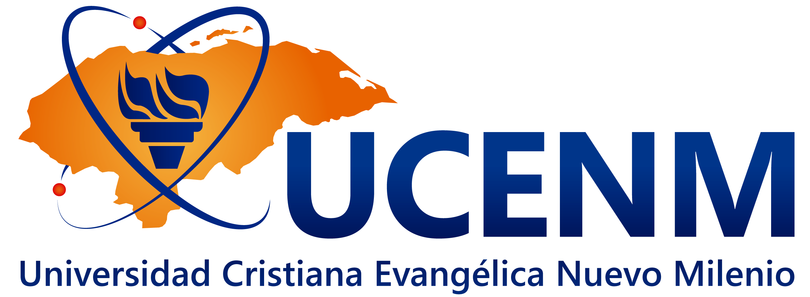

Información General
Universidad: Universidad Cristiana Evangélica Nuevo Milenio (UCENM)
Asignatura: Laboratorio de Sistemas Operativos II
Docente: Ricardo Enrique Lagos Mendoza
Fecha: Domingo 5 de Julio de 2026

Integrantes del Grupo #2
| No. | Nombre | Número de Cuenta |
|---|---|---|
| 1 | Ángel José Rosa Guifarro | 120350016 |
| 2 | Brayan Jesús Bustillo Elvir | 122310061 |
| 3 | Carmen Maribel Melgar Mejía | 107290127 |
| 4 | Christian Saul Calix Pineda | 121450021 |
| 5 | Cynthia Vanessa Rodríguez Silva | 120450041 |
| 6 | José Alonzo Ortega Serrano | 121280016 |
| 7 | Osman Adonay Mateo López | 121250002 |
| 8 | Selvin Alonso Miranda Martínez | 122250055 |
Instrucciones
Objetivo General
Evaluar las competencias prácticas del estudiante en la administración de contenedores Docker mediante la creación de un entorno funcional utilizando imágenes oficiales, volúmenes, redes y servidores web.
Escenario
La Universidad necesita desplegar rápidamente un servidor web para publicar la información de una asignatura sin instalar software directamente sobre el sistema operativo. Como administrador de sistemas se deberá implementar toda la infraestructura utilizando Docker.